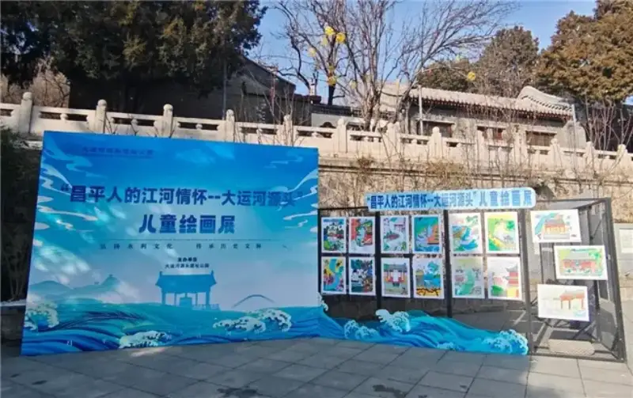
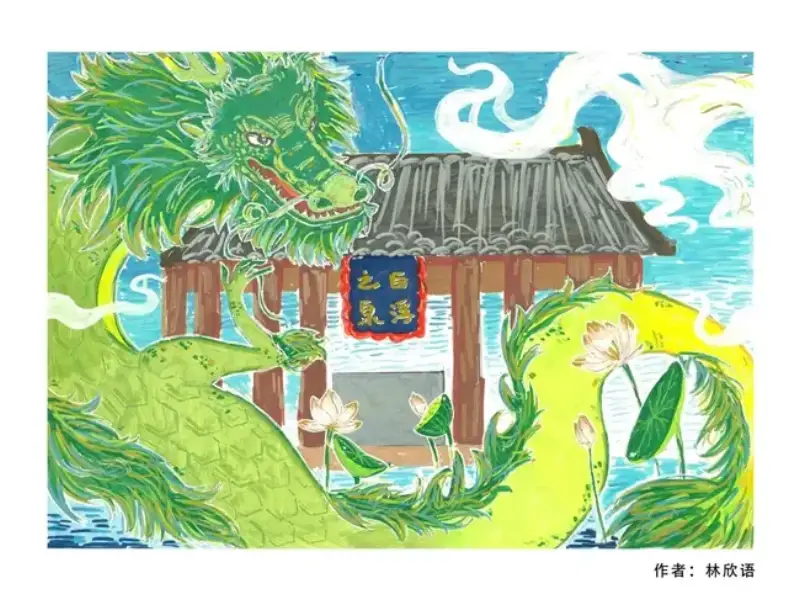
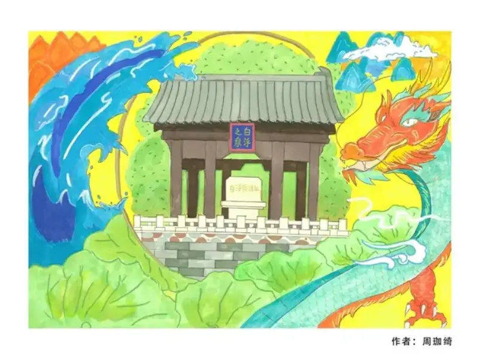
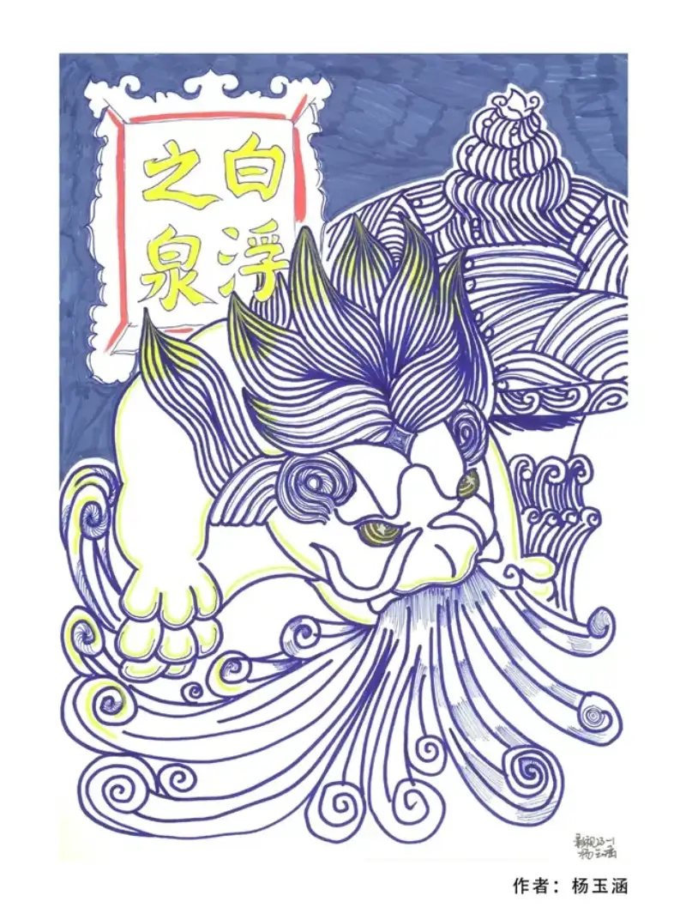
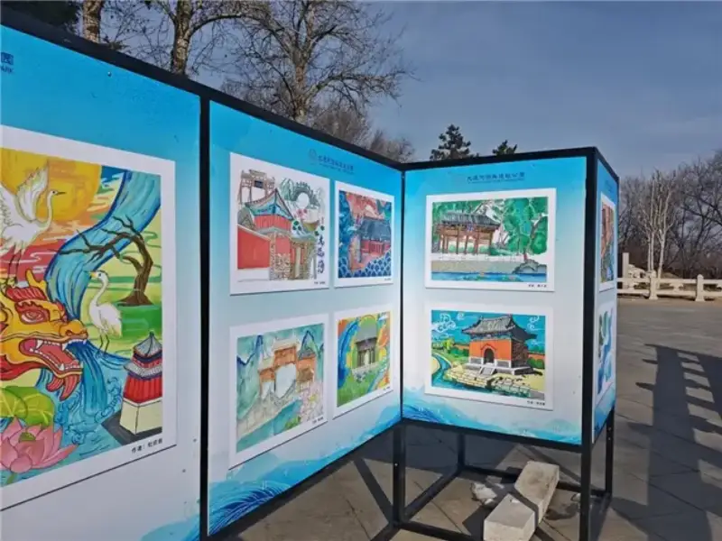

A brush meets the thousand-year Grand Canal. A cultural dialogue across time and space is slowly opening in Changping. The themed painting exhibition People of Changping and Their Love of Rivers: The Source of the Grand Canal is now open. It is hosted by the Grand Canal Source Heritage Park and co-organized by Beijing Changping Vocational School. More than 100 works are on show in the heritage park. The artists use fine brushwork to trace the history of the Grand Canal and depict its present-day look. The moving stories of the thousand-year waterway come alive on the paper.
The call for works began at the end of November. This event, built around People of Changping and Their Love of Rivers, has drawn wide attention. In the end, it received more than 100 submitted works. Each one carries the artist's own feeling and deep love for the source of the canal.
Selected works from the exhibition



Come to a winter date and meet the canal in the paintings

This is a free exhibition with both culture and fun. It uses online submission plus an offline show. The online call widened who can take part. The offline show places the works in the real setting of the heritage park. Visitors feel the old springs and the pavilions around them. They get the immersive sense that the canal is in the painting and outside it too.
The show runs until December 31, 2025. It adds a touch of cultural warmth to Changping in winter. Bring your family and children. Find the stories of the canal in the children's paintings. Touch the history through a parent-child visit. Let this winter feel especially warm because of culture and art. (Grand Canal Source Heritage Park)